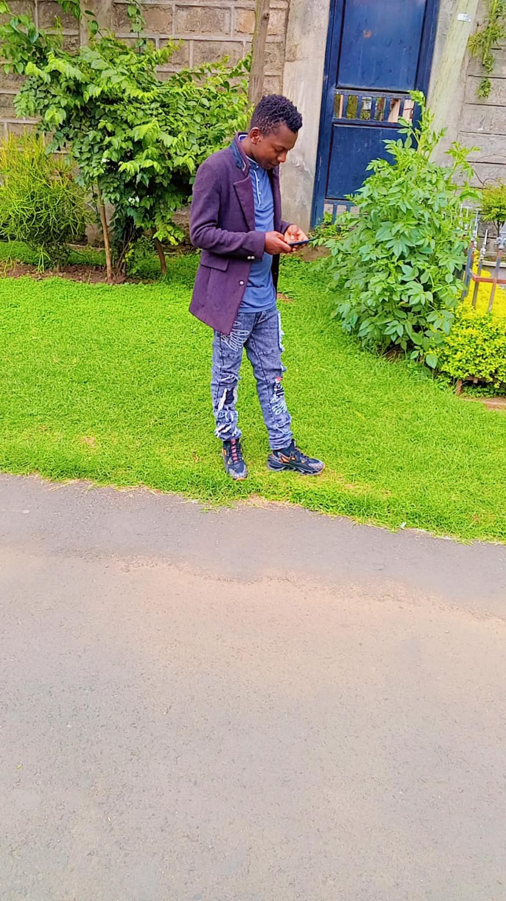
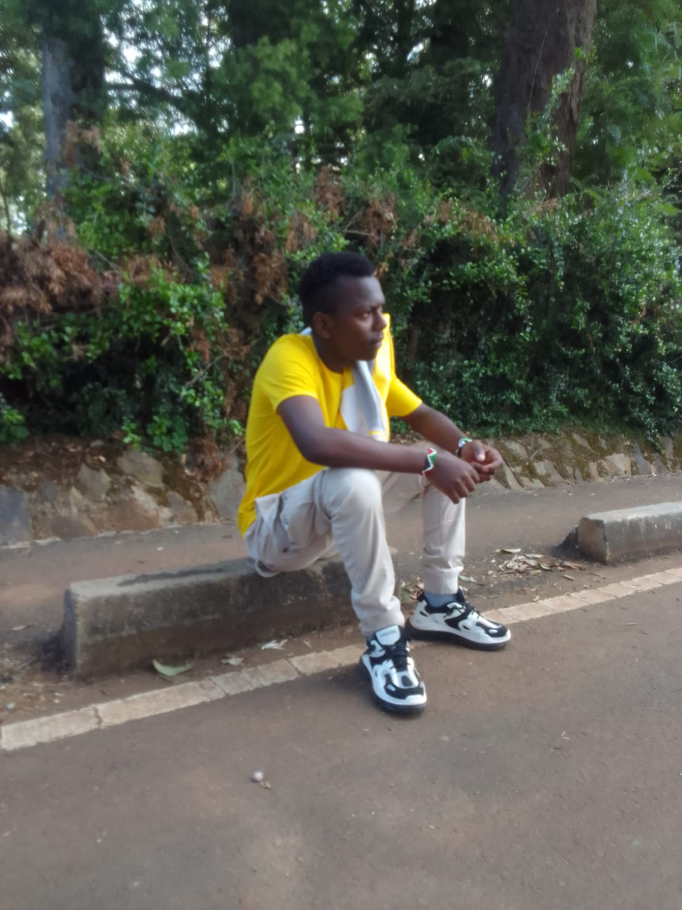

01
Web development
Responsive websites and web apps designed to look sharp, load fast, and work across devices.
↗Hi, I'm Kelvin Mutwiri — Klaus for short.
Developer and AI enthusiast turning ideas into practical digital products — from responsive websites and mobile apps to intelligent tools that solve real problems.

01 / THE PERSON BEHIND THE CODE

I’m Kelvin Mutwiri, known as Klaus — a software developer and IT enthusiast who enjoys connecting creative thinking with practical engineering.
I work across web development, mobile applications, technical support, and AI experiments. I care about interfaces that feel clear, code that is maintainable, and technology that genuinely helps people.
My process is simple: understand the problem, build a thoughtful solution, test it, and keep improving it.
Have a project in mind? ↗02 / WHAT I DO
A flexible toolkit for building useful, user-friendly digital experiences.
Responsive websites and web apps designed to look sharp, load fast, and work across devices.
↗Exploring AI assistants, intelligent workflows, and practical automation for everyday tasks.
↗Troubleshooting hardware, software, connectivity, and user issues with a methodical approach.
↗Building application prototypes and connecting interfaces to databases and APIs.
↗03 / MY TOOLKIT
Technology changes.
Learning stays.
These are tools and technologies I work with or explore. My toolkit keeps evolving as I build.
04 / SELECTED WORK
Public repositories from my GitHub, kept up to date automatically.
Loading projects from GitHub…
05 / THE JOURNEY
Every project teaches me something new.
My journey blends formal computer science learning, hands-on IT experience, and independent software projects.
Supported day-to-day ICT operations, troubleshooting, device setup, connectivity, and user support in a working environment.
Studied programming, databases, software development, and IT systems — then applied the learning through practical projects.
Creating web apps and AI experiments while improving my engineering habits, portfolio, and product thinking.
06 / START A CONVERSATION
Open to collaborations, opportunities, and interesting problems worth solving.